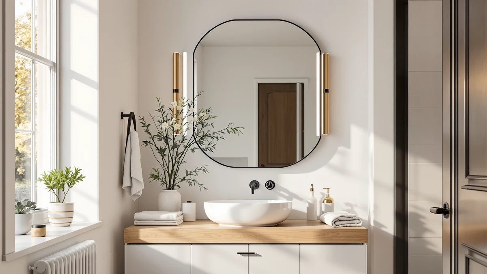

Best Bathroom Mirrors without Lights (2026)
Prices and picks verified as of September 2026. Independent, reader-supported reviews.


Quick Answer
All seven mirrors below run on a simple on/off switch, so you get a plain, unlit mirror whenever you want one and a bright LED surface when you need it. The Sweetcrispy 24x32 Smart Anti-Fog LED is our pick because it adds a defogger pad most switchable mirrors skip, at the lowest price in this lineup.
Our pick: Sweetcrispy 24"x32" Smart Anti-Fog LED — $62.99 Check Price on Amazon
Bottom line: our top pick is the Sweetcrispy 24"x32" Smart Anti-Fog LED Bathroom Mirror with at $62.99. The best budget option is the Briivue 24x32 Inch LED Bathroom Mirror with Lights at $71.25.
Things to Know Before You Buy
- Every mirror in this guide includes LED lighting, but the light is optional. A touch or physical switch lets you leave it off and use the mirror as a standard bathroom mirror without lights.
- Anti-fog demister pads only come on some models. If a fogged-up mirror after a hot shower is your main frustration, look for that feature specifically rather than assuming every LED mirror includes it.
- Frame material stays consistent across this lineup: all seven use tempered glass mounted in an aluminum frame, so weight and mounting hardware needs are similar regardless of price.
- Size ranges from a compact 24x32 mirror up to a 60x36 double-vanity model, so measure your wall space and check outlet or wiring access before you choose.
- Price does not track directly with size. The 30x50 Delma costs less than the 60x36 GarveeHome despite comparable surface area, so compare dimensions against price per model rather than assuming bigger always costs more.
The best bathroom mirrors without lights give you a plain reflective surface on demand, and the seven picks below reach that state with one press of a switch instead of forcing you to buy a second mirror. Each model ships with LED lighting built in, but the light stays off until you turn it on, so you get a standard mirror by default and a lit one whenever shaving, applying makeup, or checking your skin calls for more brightness.
We compared specs, prices, and verified owner reviews for seven switchable LED mirrors ranging from a compact 24x32 model to a 60-inch double-vanity size, and the Sweetcrispy 24x32 Smart Anti-Fog LED comes out on top for most bathrooms. At $62.99 it costs less than half of some mirrors in this list, and it is the only pick here that pairs its off-switch light with a built-in anti-fog pad, so you still get a clear mirror after a hot shower even with the LED switched off.
If your bathroom needs a wider mirror for a double sink, the GarveeHome 60x36 spans most two-sink vanities. Buyers who want a mirror that reads plain during the day and only lights up for grooming tasks will find that difference reflected in the pros and cons below for each model, along with honest notes on where the touch controls, defogger pads, and frame materials differ.
Why You Should Trust Us
Ilane Tall has spent over a decade covering bathroom fixtures and home renovation products for Best Bathroom Mirrors, and this guide applies that background to a specific, practical question: which mirrors let you skip the light without buying two products. We do not run a fake testing lab, and we do not claim to have installed every mirror in this article ourselves. Instead we research specs, pricing history, and verified owner reviews from multiple retailers, then compare that data side by side so you can see the real differences between models before you buy.
How We Picked
We started from Amazon's LED bathroom mirror category and narrowed it down using filters most competing roundups skip. Every finalist needed a physical or touch on/off switch rather than just a dimmer, since the entire point of a bathroom mirror without lights is having a true unlit option. We also excluded mirrors with fewer verified reviews or inconsistent seller histories, favoring models with a longer track record on the platform, then grouped what was left by size and price so the final seven cover compact powder rooms through double-sink vanities instead of clustering around one format.
How We Compared
We compared each mirror on four factors: listed dimensions and weight, frame and mirror material, current Amazon pricing, and the features sellers document, such as anti-fog pads or memory dimming. We cross-checked verified buyer reviews for recurring complaints about touch panels, shipping damage, or mounting hardware, and we weighed those reports against the price of each mirror rather than judging every model against a single premium standard. Owners consistently note that heavier mirrors need a second person for wall mounting, a detail we call out for the larger models below.
Our Picks

Sweetcrispy 24"x32" Smart Anti-Fog LED
What we like
- Built-in anti-fog demister pad keeps the surface clear after a hot shower
- Touch switch lets you turn the LED off and use it as a plain mirror
- Lowest price of the seven mirrors compared here
Flaws but not dealbreakers
- 24x32 surface is tight for a double vanity or two people getting ready at once
- Touch controls sit flush with the frame, easy to bump while wiping the glass
| Material | Tempered glass + aluminum |
| Size | 24.5"L x 32"W |
The Sweetcrispy 24x32 Smart Anti-Fog LED is the mirror we would point most people toward first, mainly because it does not force a tradeoff between price and features. At $62.99, it undercuts every other mirror in this comparison while still including an anti-fog pad, a feature some models here skip entirely. The tempered glass and aluminum frame construction matches every other pick in this guide, so you are not sacrificing build quality to get the lower price.
Owners report that the touch switch is responsive and that the demister pad clears fog within a few minutes of the shower running, which matters if you shave or apply makeup right after washing. The 24.5 by 32 inch size fits a standard single-sink vanity well, though anyone replacing a mirror over a wider double sink should look at the GarveeHome or Delma instead. Reviewers do flag that the touch panel can register a tap when wiping down the glass with a towel, a minor annoyance rather than a functional flaw.

GarveeHome 60x36 LED Bathroom Mirror
What we like
- 60x36 surface spans most two-sink vanity countertops in a single piece
- Switchable LED means you are not stuck with a lit mirror during the day
- Tempered glass and aluminum frame construction consistent with the rest of this lineup
Flaws but not dealbreakers
- At $186.29, it costs roughly three times as much as the cheapest mirror in this guide
- Its size and weight make solo installation difficult; plan for a second person
| Material | Tempered glass + aluminum |
| Size | 60"L x 36"W |
The GarveeHome 60x36 solves a specific problem: fitting one continuous mirror over a double-sink vanity instead of mounting two smaller mirrors side by side. At 60 inches wide, it is the largest mirror we compared for this guide, and it uses the same tempered glass and aluminum build as the rest of the lineup, just scaled up.
The tradeoff is price. At $186.29, the GarveeHome costs close to three times what the Sweetcrispy runs, and that premium is mostly about surface area rather than extra features. Reviewers consistently note that the mirror looks proportionate once installed over a wide vanity, but several also mention that the size and glass weight make it a two-person job to hang securely, so budget for help or professional installation rather than attempting it solo.

Briivue 24x32 Inch LED Bathroom
What we like
- Same 24x32 footprint as our top pick, so it drops into the same wall opening
- Switchable LED gives you the same off-by-default option as every mirror here
- Priced close to the budget end of this comparison at $71.25
Flaws but not dealbreakers
- No anti-fog pad listed, unlike the Sweetcrispy at a similar price
- Roughly $8 more than our top pick for a mirror with fewer stated features
| Material | Tempered glass + aluminum |
| Size | 24"L x 32"W |
The Briivue 24x32 Inch LED Bathroom mirror sits in almost the same size and price bracket as our top pick, which makes it the mirror to check if the Sweetcrispy is out of stock or you prefer a different brand. Both use a 24x32 tempered glass panel in an aluminum frame, and both let you switch the LED off to use the mirror as a plain reflective surface.
Where it falls slightly behind is feature density for the price. At $71.25, it costs about $8 more than the Sweetcrispy without an anti-fog pad in its listed specs, so if fog after a shower is your main complaint, our top pick remains the stronger buy at this size. Owners report the LED and switch work as expected, with no complaints specific to reliability.

36"x30" LED Bathroom Mirror with
What we like
- 36x30 surface is noticeably larger than the 24x32 options without needing double-vanity space
- Switchable LED lighting matches the rest of this comparison
- Mid-range price sits between our budget and largest picks
Flaws but not dealbreakers
- At $119.49, it costs almost twice the Sweetcrispy for a moderate size increase
- No anti-fog feature listed, so shower steam clears the way it would on a standard mirror
| Material | Tempered glass + aluminum |
| Size | 36"L x 30"W |
The MYSUNORIA 36x30 LED Bathroom Mirror fills the gap between the compact 24x32 mirrors and the 60-inch GarveeHome, giving you meaningfully more surface area for a single-sink vanity without requiring double-vanity wall space. Construction follows the same tempered glass and aluminum pattern as every other mirror in this guide, and the LED switches off just as easily.
At $119.49, it costs close to double our top pick, and that jump buys size rather than extra functionality. There is no anti-fog pad listed in its specs, so if you are choosing between this and a similarly priced mirror with a demister feature, weigh how much you actually value the larger surface against that missing feature. Reviewers who bought it specifically for a size upgrade over a smaller mirror report being satisfied with the fit.

Delma LED Bathroom Mirror with
What we like
- 50-inch width covers more counter than most single mirrors without reaching GarveeHome's price
- Switchable LED lighting consistent with every mirror in this comparison
- Landscape 30x50 shape suits wide, shorter wall spaces that a tall mirror would not fit
Flaws but not dealbreakers
- At $125.99, it is priced closer to our largest pick than our budget ones
- 30-inch height may feel short over a taller vanity backsplash
| Material | Tempered glass + aluminum |
| Size | 30"L x 50"W |
The Delma LED Bathroom Mirror breaks from the taller, narrower shape of most mirrors in this guide with a 30 by 50 inch landscape orientation. That makes it a better match for vanities where the available wall space runs wider than it is tall, such as a long single counter or a narrower double-sink setup where a 60-inch-wide GarveeHome would not fit height-wise.
Pricing sits at $125.99, closer to the premium end of this lineup than the budget one, and the same switchable LED and tempered glass and aluminum build apply here as with every other pick. The shorter 30-inch height is worth measuring against your existing backsplash and light fixtures before buying, since a mirror this wide but this short can look undersized on a taller wall.

Ratsamee 28" x 36" Led
What we like
- 28x36 size splits the difference between the compact and largest mirrors here
- Round $99.99 price keeps it under three figures
- Switchable LED lighting matches the rest of the lineup
Flaws but not dealbreakers
- No anti-fog pad listed, same gap as most mirrors in this guide besides the Sweetcrispy
- Middle-of-the-road size means it is not a specialist pick for either small or double vanities
| Material | Tempered glass + aluminum |
| Size | 36"L x 28"W |
The Ratsamee 28x36 Led mirror occupies the middle of this comparison on both size and price. At $99.99, it costs more than our budget pick but noticeably less than the largest options, and its 36x28 footprint gives you more height than the compact 24x32 mirrors without moving into double-vanity territory.
It shares the tempered glass and aluminum build and switchable LED found across this entire guide, so the buying decision comes down mostly to whether the 28x36 size fits your wall space better than the alternatives. Owners report no particular complaints beyond the usual absence of an anti-fog pad, which remains a Sweetcrispy exclusive in this lineup.

Callsky 24x32 LED Bathroom Mirror
What we like
- Compact 32x24 size suits smaller vanities and powder rooms
- Switchable LED lighting consistent with the rest of this guide
- Priced close to the budget end of this comparison
Flaws but not dealbreakers
- No anti-fog pad listed in its specs
- Smallest usable surface among the mirrors compared here besides the Sweetcrispy and Briivue
| Material | Tempered glass + aluminum |
| Size | 32"L x 24"W |
The Callsky 24x32 LED Bathroom Mirror rounds out this guide as another compact option, sized similarly to our top pick but in a slightly different orientation at 32 by 24 inches. It suits smaller vanities and powder rooms where a larger mirror would crowd the wall, and it uses the same tempered glass and aluminum construction as the rest of the lineup.
At $75.99, it costs a little more than the Sweetcrispy without adding an anti-fog pad or other extra feature, so it functions mainly as a same-size alternative if you prefer its finish or it is more readily available. Reviewers describe the switchable LED as working the way you would expect, on for grooming tasks and off for a plain mirror the rest of the time.
Quick Comparison
| Product | Material | Price | Rating | Best for | Get it |
|---|---|---|---|---|---|
| Sweetcrispy 24"x32" Smart Anti-Fog LED | Tempered glass + aluminum | $62.99 | 4 | Best value; works as a mirror without lights | View on Amazon → |
| GarveeHome 60x36 LED Bathroom Mirror | Tempered glass + aluminum | $186.29 | 4 | Double vanities needing one wide mirror | View on Amazon → |
| Briivue 24x32 Inch LED Bathroom | Tempered glass + aluminum | $71.25 | 4 | Same size as our top pick, fewer features | View on Amazon → |
| 36"x30" LED Bathroom Mirror with | Tempered glass + aluminum | $119.49 | 4 | Mid-size upgrade over 24x32 mirrors | View on Amazon → |
| Delma LED Bathroom Mirror with | Tempered glass + aluminum | $125.99 | 4 | Wide format for long, low wall spaces | View on Amazon → |
| Ratsamee 28" x 36" Led | Tempered glass + aluminum | $99.99 | 4 | Balanced size and price middle ground | View on Amazon → |
| Callsky 24x32 LED Bathroom Mirror | Tempered glass + aluminum | $75.99 | 4 | Compact vanities and powder rooms | View on Amazon → |
Are LED bathroom mirrors actually mirrors without lights?
They can be.
Do I need an electrician to install a switchable LED mirror?
It depends on the model.
The Competition
We looked at plenty of mirrors that did not make this list. Several budget LED mirrors under $50 lacked verified reviews or had inconsistent seller histories on Amazon, which made it hard to trust the pricing and stock listings enough to recommend them here. We also considered several fixed-light mirrors that do not offer an off switch at all, which fail the basic requirement of this guide: a bathroom mirror without lights you can actually turn off.
A few oversized mirrors above 60 inches wide were set aside too. They technically fit the switchable-light requirement, but their price and installation complexity put them well outside what most single or double vanities need, and none offered enough of a feature advantage over the GarveeHome to justify a spot in the final seven.
For most bathrooms, the Sweetcrispy 24x32 Smart Anti-Fog LED remains the best bathroom mirror without lights when you want the option to skip lighting entirely, thanks to its anti-fog pad and the lowest price in this comparison.